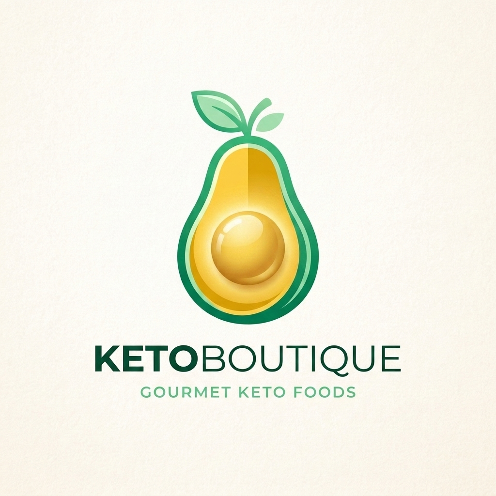
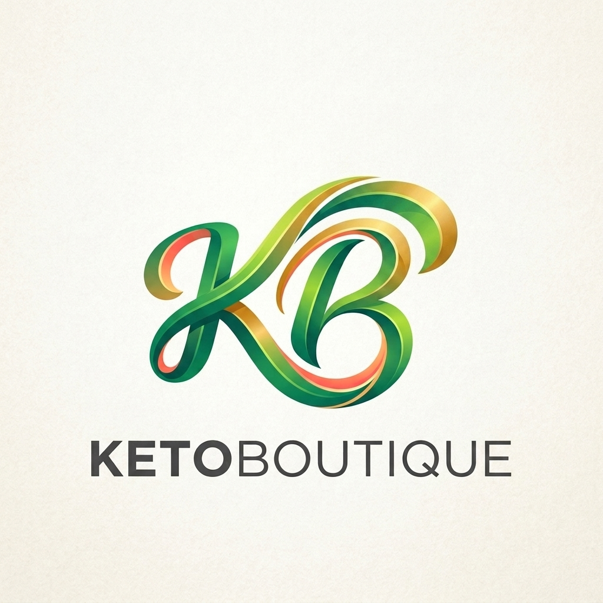

Propuestas y Evoluciones de Logotipo
Todas las opciones visuales generadas durante la sesión de diseño, organizadas y disponibles en tu disco local.
🥑 1. Evolución del Aguacate Boutique
Aguacate Puro (Sin Ramita ni Sonrisa)
Silueta de fruta 100% limpia, redondeada y continua. Núcleo esférico brillante con reflejo dorado sutil.

Aguacate con 2 Hojitas (Sin Sonrisa)
La versión perfecta con el tallo simple de 2 hojitas en la parte superior y semilla dorada pura sin boca.
Aguacate Sonriente Original
La primera propuesta con el trazo de sonrisa curva en el carozo dorado.
Aguacate Corona Botánica Multicromática
Variante con corona densa de hojas esmeralda y doradas en la parte superior.
✨ 2. Otras Propuestas de Identidad

Cinta Fluida 'KB' Pura (Sin Ramita)
Cinta ribbon volumétrica con degradados de esmeralda, lima, melocotón y oro sin la ramita de hojas.
Cinta Fluida 'KB' & Brote Esmeralda
Versión anterior con el brote de hojas en la parte superior derecha.
Sol Botánico Radiante & Tenedor
Emblema circular con amanecer dorado, hojas culinarias y silueta gourmet central.
Campana Dorada & Menta
Sello de alta cocina con cloche dorada, destellos estelares y hojas de menta orgánica.
Monograma 'KB' (Versión Sonriente)
Primera versión de la cinta KB con curva alegre y brote ascendente.
Sol Sonriente & Hojas Original
Primera versión del sol naciente con rostro alegre y tenedor botánico.
Campana Gourmet Sonriente Original
Primera versión de la campana de servicio con sonrisa y hojita.